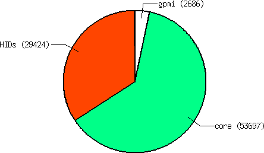
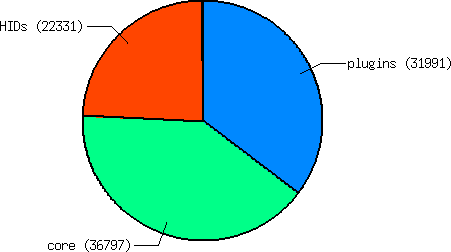
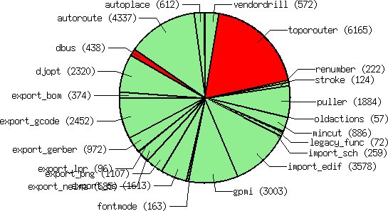

pcb-rnd modularization
Why bother...
I believe good software should be modular. This is especially important in
the context of large software, such as CAD applications. There should be
a thin core that can model the world and provide the basic operations defined
on it but anything else should go in separate modules.
Fortunately PCB already had a strong infrastructure supporting this idea.
It has dynamic loadable plugins and the GUI and exporters are in separate
HID modules. While working on pcb-gpmi and later pcb-rnd, I added the
gpmi module as a separate plugin.
In version 1.0.8 and 1.0.9 a cosiderable chunk of core code has been moved into
core plugins. A core plugin is just a plugin that is
maintained together with the core, in the same repository, still the code is
somewhat detached from the core. More importantly, the user can choose, for
each plugin, separately:
- to compile it as a buildin (static-link it into the pcb executable)
- to compile it as a plugin (dynamic-link it runtime, if the .so is installed in the plugins/ directory)
- to disable the plugin, so it is not compiled at all
I believe such modularization has benefits on multiple levels:
- it is possible to compiler smaller, potentially faster executables by omitting features the specific user would never use anyway
- in a distribution dynamic-link plugins can be distributed as separate packages providing the user with the option to decide what features to install
- such plugins have to have some sort of APIs if they want to reference eachother or if the code needs to reference them; such an API may not (and often did not) exist when the code is part of the core
Progress in charts
Before-after
All numbers are in SLOC
and are acquired running sloccount on the given directory. While lines of
code alone is not a true measure of complexity, it's a good estimation. The
slices of pie charts are the major components of the pcb-rnd executable.
|  | | 
| Before modularization: pcb-rnd version 1.0.7
Note: gpmi was already a plugin
|
| After modularization: pcb-rnd version 1.0.9
Note: gpmi is part of the "plugins" slice
|
|
Zooming on to the plugins

(Red means the plugin doesn't really work).
Progress in numbers
Below is a table with the summary of core plugins.
| module | size [sloc] | status | configure
default | description
|
|---|